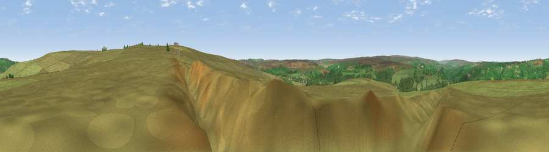

Viewpoint near Grosmont
#22176 in England · top 50% of its area beats it · near GrosmontWhere it is
The exact computed spot (NZ 83875 03475). Click the marker for map links.
The view, rendered

A 360° render of this exact spot computed from the terrain model, tree cover and land cover — summer colours, afternoon light, calibrated against photographs of famous viewpoints. Real trees, hedges and buildings will differ in detail.
The panorama
Grey silhouette: terrain skyline in each direction (720 bearings, Earth curvature and refraction included). Dashed green: skyline with trees (+15 m) and buildings (+8 m) as obstacles. Blue strip: how far the ground is visible on each bearing.
Where the view opens
Wedge length = distance to the farthest visible ground on that bearing (vegetation-aware). Rings at 10, 25 and 50 km.
What fills the view
89% grassland · 10% woodland · 2% cropland
Angular shares of the visible panorama (visual magnitude), not map area. Landscape diversity 0.18 (0–1 Shannon).
Key numbers
More beautiful places nearby
The staircase of upgrades: each row has a higher view potential than everything closer. Driving times are estimates from straight-line distance, calibrated against real road routing — check an actual route before setting out.
| Place | Direction | Drive | Score |
|---|---|---|---|
| Viewpoint near Grosmont | NW · 0 km | ~1 min | 51.4 |
| Lucy's View | NNE · 2 km | ~5 min | 60.9 |
| Pen Howe | ENE · 2 km | ~5 min | 67.7 |
| Viewpoint near Eskdaleside | NE · 2 km | ~6 min | 78.4 |
| Viewpoint near Eskdaleside | NNE · 3 km | ~6 min | 80.7 |
| Viewpoint near Fylingthorpe | E · 9 km | ~18 min | 81.1 |
| Viewpoint near Fylingthorpe | ENE · 10 km | ~19 min | 82.3 |
| Viewpoint near Robin Hood's Bay | ENE · 11 km | ~21 min | 83.3 |
54.41981, -0.70890 · source: screening · position refined by local search. Computed location — check access rights before visiting.